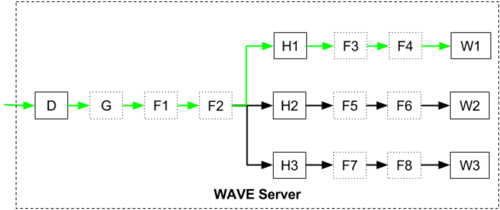

Server Side
WAVE is a "Web App View Enhanced" web server which provides DYNAMIC web site services. This server is not meant to be exposed directly to the public Internet, rather it should be used as an application server behind the reverse proxy, such as NGINX. This server is designed to serve dynamic data-driven requests/APIs and not meant to be used for serving static content files (although it can).
Every request goes through a pipeline where the server checks if the incoming request is allowed, performs additional processing like logging or adding session state and finally serves the request. The pipeline consists of the following parts:
- Dispatcher - organize a process of request's passing through pipeline.
- Gate - a logical filter of incoming requests, it is somewhat similar to a firewall - it allows/denies the traffic based on the set of rules.
- Filters - performs actions like logging or handling session state. Unlike handlers, filters do not necessarily handle work rather augment the work context.
- Handlers - where all actual work is done, they are final work execution destination.
- The gate and filters are optional but the server must have at least one handler which may have its own set of filters specific to the request. The server matches handlers against a request based on URI. However, this may be overridden.
In the next figure some request comes to the WAVE server. Dispatcher D passes it through gate G and filters F1, F2 and finds a handler H1 which matches the request. The handler applies its own filters F3, F4 and performs the actual work W1. If a handler has no filters it immediately executes the work.

Typical WAVE server configuration that corresponds the figure above will look like as (the node prefix is required):
nfx
{
wave
{
server
{
prefix { name="http://+:8080" }
dispatcher
{
gate { name="G" ... }
filter { name="F1" order=1 type="F1" }
filter { name="F2" order=2 type="F2" }
handler
{
name="H1" order=0 type="H1"
filter { name="F3" order=0 type="F3" }
filter { name="F4" order=1 type="F4" }
}
handler { name="H2" order=0 type="H2" ... }
handler { name="H3" order=0 type="H3" ... }
}
}
}
}
Example 1:
class TestHandler : WorkHandler
{
public TestHandler(WorkDispatcher dispatcher, string name, int order, WorkMatch match)
: base(dispatcher, name, order, match) {}
public TestHandler(WorkDispatcher dispatcher, IConfigSectionNode confNode)
: base(dispatcher, confNode) {}
protected override void DoHandleWork(WorkContext work)
{
work.Response.WriteLine("Hello, world!");
}
}
class Program
{
static void Main(string[] args)
{
try
{
using (new ServiceBaseApplication(args, null))
using (var ws = new WaveServer())
{
ws.Configure(null);
ws.Start();
Console.WriteLine("Web server started. Press <ENTER> to terminate...");
Console.ReadLine();
}
}
catch (Exception ex)
{
Console.WriteLine(ex.ToMessageWithType());
System.Environment.ExitCode = -1;
}
}
}
with configuration:
nfx
{
wave
{
server
{
prefix { name="http://+:8080/" }
dispatcher
{
handler
{
name="Test"
order=0
type="WaveTest.TestHandler, WaveTest"
match {}
}
}
}
}
}
Now the server will respond with "Hello, world!" to every request from localhost:8080.
WAVE implementation is based on a lightweight HttpListener that processes incoming HTTP requests via an injectable WorkDispatcher which governs the threading and WorkContext life cycle. The server processing pipeline is purposely designed to be synchronous-blocking (thread per call) which does not mean that the server is inefficient, to the contrary - this server design is specifically targeting short-called methods relying on a classical thread call stack. This approach obviates the need to create surrogate message loops/synchro contexts, tasks and other objects that introduce extra GC load. The server easily support "dangling" (left open indefinitely) WorkContext instances that can stream events (i.e. SSE/Server Push) and WebSockets from specially-purposed asynchronous notification threads.
WorkContext represents a context for request/response server processing in WAVE framework and includes:
WaveServer- the server this context is under.Request- returns HttpListenerRequest object for this context.Response- a wrapper for HttpListenerResponse which represents Response object used to generate web responses to client.WaveSession- session that this context is linked with. It stores user geographical/location information. Also session contains CSRFToken - unique token assigned at session start used for checking of form posts (purpose - to provide Cross Site Request Forgery protection) and every MVC controllers of such kind must have SessionCSRFCheck attribute to pass corresponding check.SessionFilter- returns the first session filter which was injected in the processing line. It is the filter that manages the session state for this context.WorkHandler- a work handler instance that was matched to perform work on this context or null if the match has not been made yet.GeoEntity- geo location information as detected by GeoLookupHandler. If Session context is injected then get/set passes through into session object.Items- provides a thread-safe dictionary of items. The underlying collection is lazily allocated.LastError- if any error occurs during processing the request it will be stored in this property.RequestedJSON- returns true if client indicated in response that "application/json" is accepted.Request methodindicators: IsPOST/IsGET/IsPUT/IsDELETE/IsPATCH.Portal- returns portal object for this request or null if no portal was injected. To make your web portal with NFX.WAVE library you can use Portal abstract class as a base. It represents a web portal that controls the mapping of types and themes within the site. Portals allow to host differently-looking/behaving sites in the same web application. And you can use Portal hub - a registry of portals. It establishes a context for portal inter-operation (i.e. so one portal may locate another by name) when some settings need to be cloned. This is an application-started singleton instance class. Theme concept is closely related with Portal. It groups various resources (such as css, scripts etc..) within a portal.Match- returns the WorkMatch instance that was made for this requested work or null if nothing was matched yet. WorkMatch decides whether the specifies WorkContext matches the requirements specified in the instance. The match may consider Request and Items properties of work context for match determination. Work matches do not belong to particular handler or filter, so they are stateless and their instances can be used by multiple different processors (i.e. handlers and filters).Handled- returns true when the work has been executed by the WorkHandler instance.Aborted- indicates whether the work context is logically finished and its nested processing (i.e. through Filters/Handlers) should stop. For example, when some filter detects a special condition (judging by the request) and generates the response and needs to abort the work request so it doesn't get filtered/processed anymore, it can set this property to true. This mechanism performs much better than throwing exceptions.ReleaseWorkSemaphore- releases work semaphore that throttles the processing of WorkContext instances. The WorkContext is released automatically in destructor, however there are cases when the semaphore release may be needed sooner, i.e. in a HTTP streaming application where work context instances are kept open indefinitely it may not be desirable to consider long-living work context instances as a throttling factor. Returns true if semaphore was released, false if it was not released during this call as it was already released before.Log- facilitates context-aware logging.NeedsSession- ensures that session is injected if session filter is present in processing chain. If session is already available then does nothing, otherwise fills Session property with either NEW session if user supplied no session token, OR gets session from session store as defined by the first SessionFilter in the chain.
WAVE contains WorkDispatcher that represents a default dispatcher that dispatches WorkContext calls on the same thread that calls Dispatch(work).
May extend this class to implement custom dispatchers, i.e. the once that maintain their own work queue/worker threads.
Implemented Handler types:
CompositeHandler- dispatches work to sub-handlers just like the dispatcher does.ContextDumpHandler- dumps WorkContext status - used for debugging purposes.EmbeddedSiteHandler- implements handler that serves content from assembly-embedded resources and class actions.FileDownloadHandler- downloads local files.MVCHandler- handles MVC-related requests.NOPHandler- implements handler that does nothing.StockContentSiteHandler- serves the embedded content of NFX.Wave library.TemplateHandler- implements handler that serves WaveTemplates.TypeLookupHandler- represents a base handler for all handlers that dynamically resolve type that performs actual work.WorkHandler- abstract, represents a base for all work handlers.
Implemented Filter types:
BeforeAfterFilterBase- abstract, provides base for filters that have before/after semantics.ErrorFilter- intercepts error that arise during processing and displays an error page for exceptions and error codes.GeoLookupFilter- upon match, looks up user's geolocation based on a IP address.LoggingFilter- logs information extracted from WorkContext.PortalFilter- manages injection of portal into the work context.RedirectFilter- upon match, redirects client to the specified URL resource.SecurityFilter- checks permissions before doing work.SessionFilter- manages session state in work context.StopFilter- stops the processing of WorkContext by throwing exception upon match.WorkFilter- abstract, represents a base for all work filters.
Both WorkDispatcher and WorkHandler may have filters. In case of WorkDispatcher they would process every request, whereas located in WorkHandler they would filter specific cases.
SessionFilter manages session state in work context using ObjectStoreService as a back-end store by default.
ObjectStoreService stores objects in process's memory, asynchronously saving them to an external non-volatile storage upon change and synchronously saving objects upon service stop using file-based FileObjectStoreProvider.
Applications can use their own providers in order to save session in a different store.
Another option is to override SessionFilter.StowSession.
Applications should call WorkContext.NeedsSession method to ensure the session is created.
By default NFX.WAVE stores session ID in WV.CV cookie. FileObjectStoreProvider uses root-path and GUID specified in the configuration file as the store directory.
In addition server side WAVE contains following classes:
RecordModelGeneratorfacilitates tasks of JSON generation for record models/rows as needed by WAVE.RecordModel client library. This class does not generate nested models, only flat models for particular row (i.e. id row has a complex type field, it will be serialized as "object").Recordrepresents a client-side "Form" - an analogue ofWAVE.RecordModel.Recordon server-side. The class is initialized from schema obtained from the server via JSON which is generated byRecordModelGenerator.Recordclass is usually used for API consumers that need to have the JS/client-like functionality on the server.